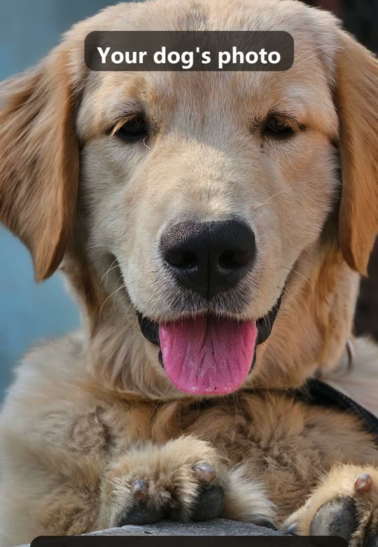
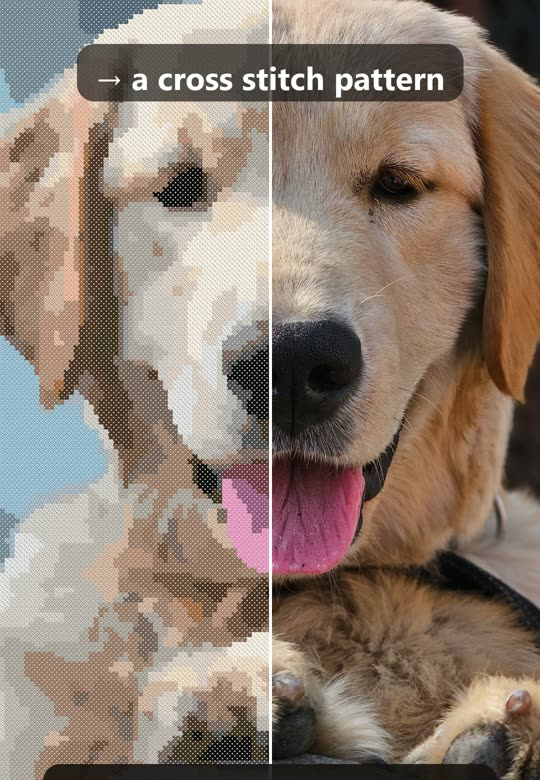
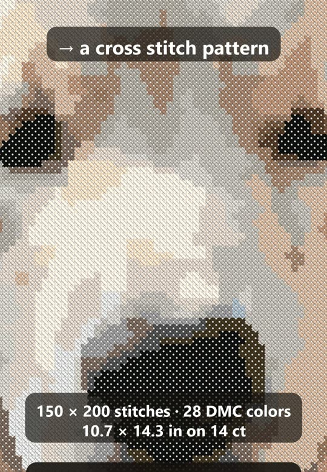
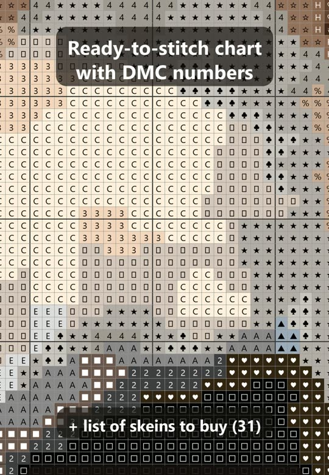

How to Turn a Photo of Your Pet into a Cross Stitch Pattern
A pet portrait is one of the nicest things you can stitch, and you don't need to draw to chart one. Here is how to go from a phone photo to a counted pattern you can actually finish: which photo to pick, how big to make it, how many floss colors to use, and how to check the result before you buy a single skein.




1. Pick a photo that will stitch well
- The face fills the frame. Crop so the head and chest take most of the picture. A pet that is small in the photo becomes a few dozen stitches and loses its expression.
- Eyes toward the camera, sharp focus. The eyes are what people recognise; a blurry photo gives a blurry pattern.
- Soft, even light. Daylight from a window is best. Hard flash makes white patches; deep shadows turn into one dark block.
- A simple background that contrasts with the fur: a black cat on a light sofa, a white dog on a dark blanket. You can also leave the background unstitched.
2. Choose the size in stitches, not in inches
The size in stitches decides how much detail you get and how long it takes; the fabric count only turns it into inches. For a recognisable face, plan on at least 80 stitches across the head. 133 × 200 is a comfortable portrait; 60 × 75 is a small ornament where you keep the shape and colors, not the fur.
| Stitches | 14 count Aida | 16 count | 18 count |
|---|---|---|---|
| 60 × 75 | 4.3 × 5.4 in (11 × 14 cm) | 3.8 × 4.7 in (10 × 12 cm) | 3.3 × 4.2 in (8 × 11 cm) |
| 80 × 100 | 5.7 × 7.1 in (15 × 18 cm) | 5.0 × 6.2 in (13 × 16 cm) | 4.4 × 5.6 in (11 × 14 cm) |
| 100 × 133 | 7.1 × 9.5 in (18 × 24 cm) | 6.2 × 8.3 in (16 × 21 cm) | 5.6 × 7.4 in (14 × 19 cm) |
| 133 × 200 | 9.5 × 14.3 in (24 × 36 cm) | 8.3 × 12.5 in (21 × 32 cm) | 7.4 × 11.1 in (19 × 28 cm) |
| 150 × 200 | 10.7 × 14.3 in (27 × 36 cm) | 9.4 × 12.5 in (24 × 32 cm) | 8.3 × 11.1 in (21 × 28 cm) |
3. Pick the number of colors
More colors are not always better. Each color is another skein and another thread change. For pets, 20–30 DMC colors keep the fur soft; for a small ornament, 12–18 are enough. Look for lone single stitches of a color in the chart: a good pattern merges them into neighbours, so you don't change thread for one cross.
4. Check the stitched preview before you buy floss
A chart full of symbols is hard to judge. Look at a preview of how it will look stitched, from arm's length: that is how people will see it. If the eyes or nose are lost, crop the photo tighter or make the pattern bigger rather than adding colors.
5. Count the skeins and print the chart
A full skein of DMC stranded cotton covers about 1,500–1,800 full stitches on 14 count with two strands. Buy one extra skein of the colors you use most: dye lots differ. Print the chart large, with a 10 × 10 grid and the symbol key, or stitch from a tablet and mark what's done.
Get Nitki on Google Play
Common questions
How long does a pet portrait take? Most people stitch 150–250 full stitches an hour. A 133 × 200 portrait is about 26,600 stitches — a few months of evenings. A 60 × 75 ornament is about 4,500 stitches, roughly 18–30 hours.
Can I use a dark photo? Brighten it first; dark areas merge into one color.
Several pets? Make one pattern per pet in the same size and colors, and they will look like a set.